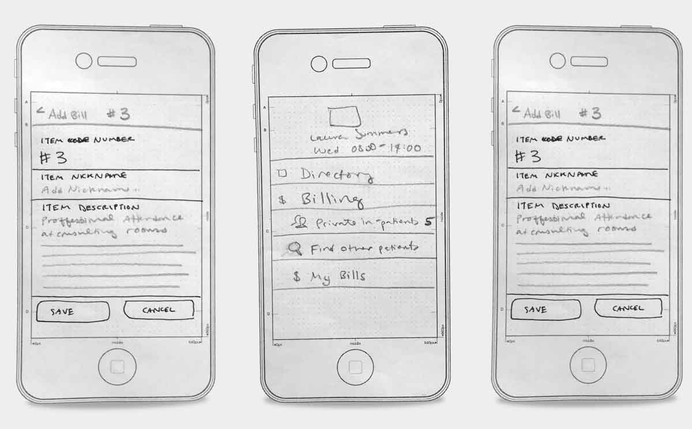
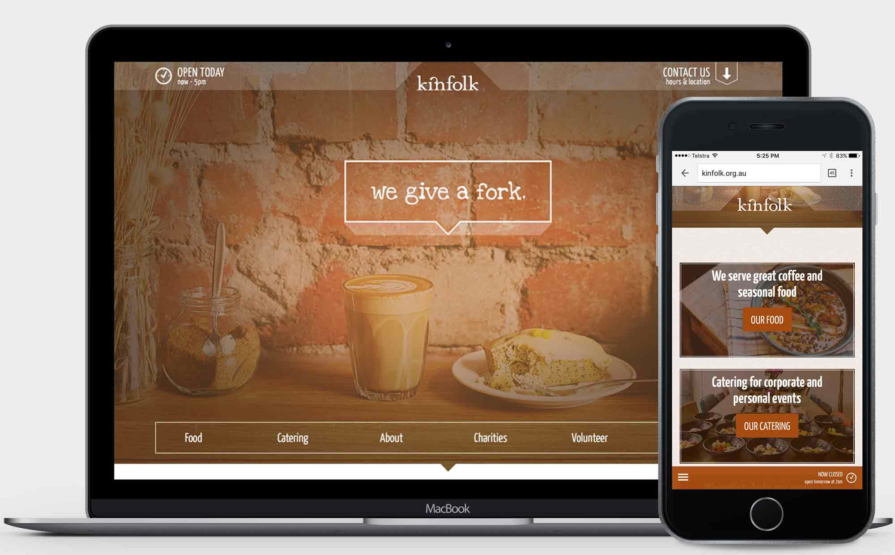
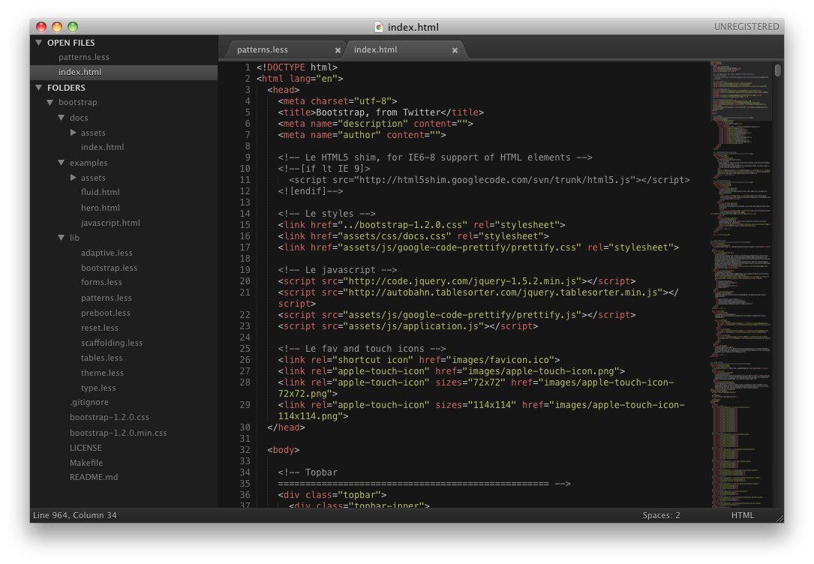

I design and build tools with startups and businesses.
Companies I've worked with recently...
I work across UX, UI, and FED skill sets.
What does that look like?
Sometimes this...

Or this...

Or this...

(Sometimes all three in the same day!)
Work history
Timeline
Education
-
School of Life
Certificate in 'Googling like a Mo-fo'
An on-going degree ;) One which I attempt to enrich with multiple resources including pretty much every book ever published by A Book Apart, many many design blogs and podcasts, plus the odd meet-up and industry event, including An Event Apart in SF 2010.
-
Monash University
Masters of Multimedia
A multimedia degree which focused on getting students grounded in the technical aspects of design for screen. Graduated in June 2007 with an HD (High Distinction) average.
-
Cornell University
Bachelor of Arts
A great liberal arts education which gave me a baseline for further learning and tought me analytical thinking and problem solving skills. I majored in English, with a concentration in Performing Arts. Grduated in May 2002 with a 3.6 Cumulative G.P.A. & Dean's List.
Other stuff I do
Talk
MelbCSS, Be Responsive etc...
Radio/Podcast
I'm an occasional co-host on a program called Byte Into It, hosted by community-run radio RRR. I get to interview amaing people like Majeic Ceglovski and ...
Diversity
I'm passionate supporter about improving diversity in technology and ensuring our workplaces are welcoming and inclusive. I like to participate in stuff like :
- Code like a girl
- Go Girl, Go For IT
Volunteer
I also like to provide my time to help organisations doing
Not sick of me yet?
Here's a bit of a profile video: